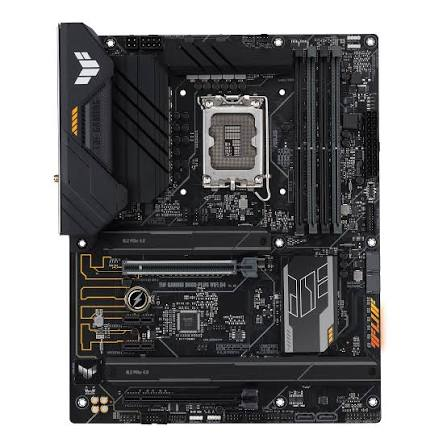
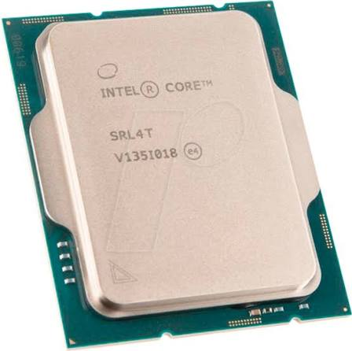
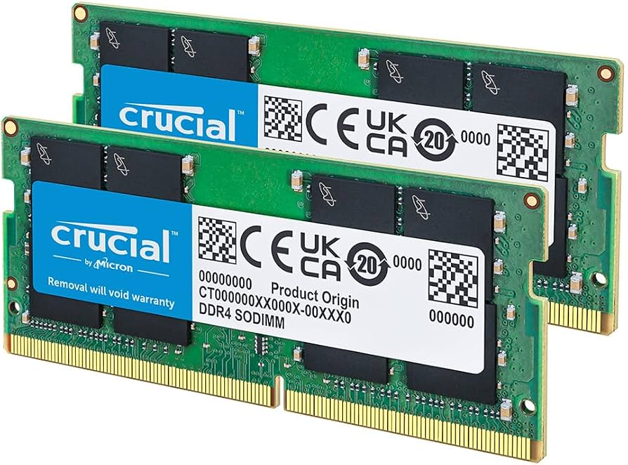
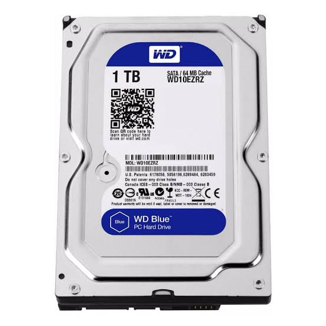
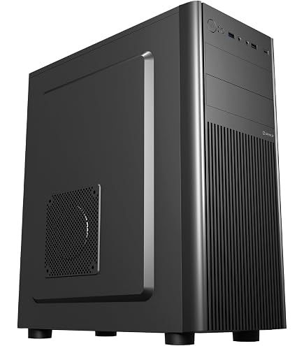
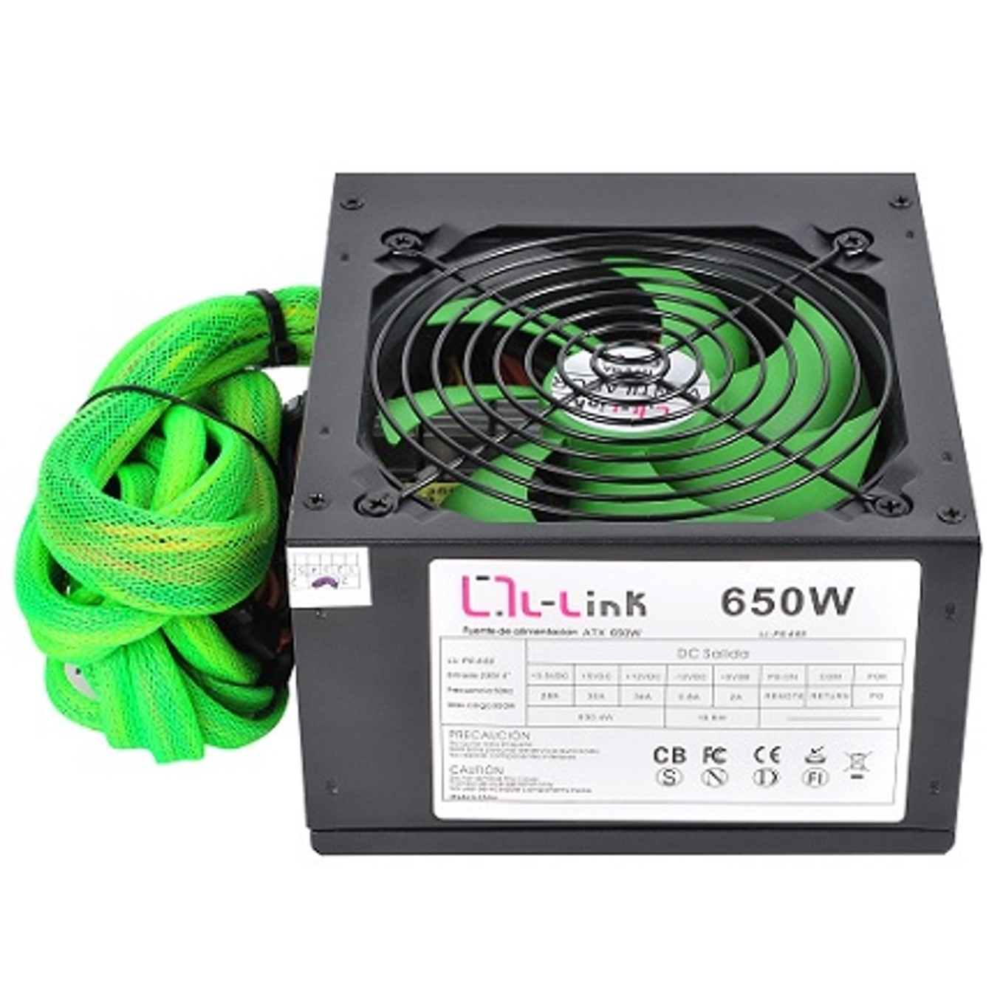
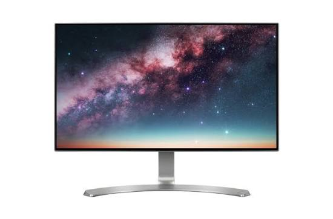

PLACA BASE
La placa base es uno de los principales componentes de un ordenador. A ella se conectan todo el resto de componentes, dispositivos y periféricos, por lo que hay que escogerla con mucho cuidado, ya que el resto de componentes deberán ser compatibles con la placa. Las características de la placa escogida son las siguientes:

Características
- Marca y socket de procesador compatible: Intel LGA1700
- Memoria compatible: 4xDDR4 (máximo 128GB)
- Almacenamiento: M.2 y SATA
- Formato: ATX
- Dispone de módulo Wi-Fi: Sí
Precio
168€ en PCComponentes
PROCESADOR
El procesador o CPU es el auténtico cerebro del ordenador, encargado de ejecutar todas las órdenes, procesar los datos y coordinar el sistema operativo. Su potencia determina la velocidad general del equipo al abrir programas y realizar tareas complejas, por lo que es vital elegir uno adecuado para el uso que le vayas a dar. Las características del procesador escogido son las siguientes:

Características
- Marca: Intel (Model Core i5-12400F)
- Socket: LGA1700
- Graficos integrados (sí/no): No
- Nucleos: 6 nucleos/ 12 hilos
- Frecuencia base: 2.5 GHz
Precio
125€ en Amazon
MEMORIA RAM
La memoria RAM es el almacenamiento temporal y ultra rápido que utiliza el procesador para guardar los datos de los programas que estás usando en el momento. Si abres muchas pestañas en el navegador o ejecutas un juego pesado, una buena cantidad de RAM evitará que el ordenador sufra ralentizaciones o tirones. Las características de la memoria RAM escogida son las siguientes:

Características
- Tipo: DDR4
- Formato: DIMM
- Capacidad: 16GB
Precio
42€ en PCComponentes
ALMACENAMIENTO (DISCO)
El disco de almacenamiento es el lugar donde se guardan de forma permanente todos tus archivos, fotos, vídeos, juegos y el propio sistema operativo. Hoy en día es fundamental que sea un disco rápido para que el ordenador se encienda en pocos segundos y los archivos se copien al instante de manera eficiente. Las características del almacenamiento escogido son las siguientes:

Características
- Capacidad: 1 TB
- Tipo de disco: SSD NVMe M.2
- Conector: PCle Gen 4x4
Precio
75€ en Amazon
TORRE
La torre o caja es el chasis exterior que protege todos los componentes internos del polvo, los golpes y las temperaturas elevadas. Además de definir la estética visual de tu espacio de trabajo o juego, debe tener el tamaño correcto y un buen flujo de aire para asegurar que las piezas se mantengan frías. Las características de la torre escogida son las siguientes:

Características
- Formato (medida): Semitorre ATX (compatible con placas ATX y Micro-ATX)
Precio
55€ en Coolmod
FUENTE DE ALIMENTACION
La fuente de alimentación es el componente encargado de transformar la corriente eléctrica del enchufe de tu casa en la energía exacta que necesitan los componentes internos. Una buena fuente garantiza la estabilidad de todo el equipo y protege tus valiosas piezas contra posibles subidas de tensión o apagones. Las características de la fuente escogida son las siguientes:

Características
- Potencia: 650 W
- Formato: ATX
- Eficiencia: Certificación 80 Plus Bronze
Precio
65€ en PCComponentes
MONITOR
El monitor es la pantalla principal y el periférico esencial a través del cual interactúas con tu ordenador y ves los resultados de tus acciones. Su tamaño, definición y la fluidez con la que muestra las imágenes influyen directamente en la comodidad visual tanto para trabajar muchas horas como para disfrutar de contenido multimedia. Las características del monitor escogido son las siguientes:

Características
- Resolución: Full HD
- Pulgadas: 24 pulgadas
- Tipos de conexiones con la placa: HDMI y DisplayPort
Precio
119€ en MediaMarkt